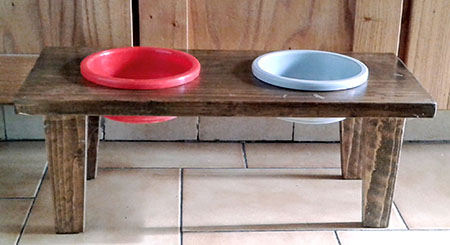
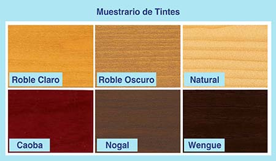
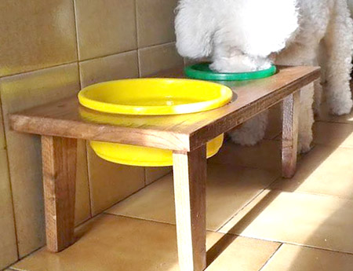

| Tamaño | Medida |
| Mini | 40 x 18 x 10 cm |
| Chico | 50 x 22 x 20 cm |
| Mediano | 60 x 28 x 30 cm |
Las medidas son para dos bowls de igual tamaño, si son de distinto tamaño, la profundidad del comedero aumenta en 2 cm
